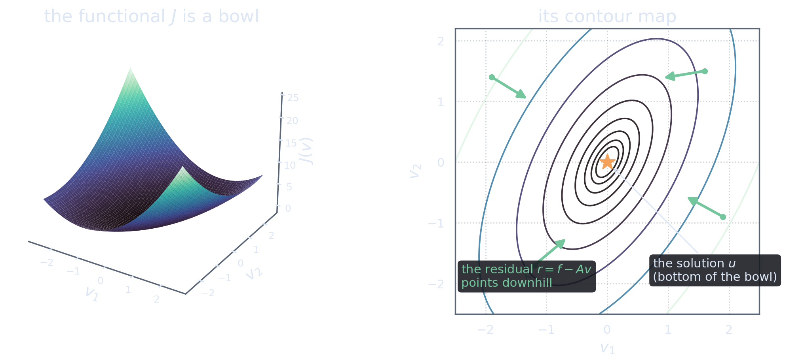

One Equation, Everywhere
The problem
Almost every quantitative field eventually runs into an equation of the following shape. There is a real Hilbert space \(\H\), a known right-hand side \(f\in\H\), a linear operator \(A:\H\to\H\), and we must find the element \(u\in\H\) satisfying
\[A u = f.\] tap for the standing assumptions on \(\H\) and \(A\) ➤Throughout these notes, \(A\) is bounded, self-adjoint, and positive definite. Press the equation above to see precisely what these three assumptions say and what each one buys us. They are not decoration: every act of this series will lean on all three.
Where do such equations come from? A few examples, deliberately drawn from different worlds:
- Least squares and inverse problems. Fitting observations \(d = Gm\) in the least-squares sense leads to the normal equation \(G^*G\,m = G^*d\) (see [Saa03], Ch. 8). The operator \(G^*G\) is automatically self-adjoint and positive semi-definite; add the slightest regularization and it becomes positive definite. Readers of My Take on SOLA have met operators of exactly this form.
- Equilibrium physics. Steady-state heat flow, elastic deformation, electrostatics: the weak form of each is \(\ip{Au}{v}=\ip{f}{v}\) for all test elements \(v\), with \(A\) a self-adjoint positive operator built from the physics (a Laplacian-like object).
- Gaussian inference. Computing a posterior mean in a linear-Gaussian model requires solving a system whose operator is a sum of inverse covariances — again self-adjoint and positive definite.
The examples share more than a shape. In each of them, \(A\) is enormous. After discretization it might be a matrix with billions of entries; before discretization it is not a matrix at all, but a genuinely infinite-dimensional operator acting on functions.
The black box
Here is the constraint that drives everything that follows. In all the interesting cases, we cannot write \(A\) down. What we can do is apply it: given \(v\), some computation — a simulation, a convolution, a sparse product, a physical model — returns \(Av\). The operator is a black box with an input slot and an output slot.
Take stock of our toolkit. We can:
- apply \(A\) to any element we hold;
- add elements of \(\H\) and scale them;
- compute inner products \(\ip{v}{w}\).
And that is all. There is no “divide by \(A\)” button.
Under our assumptions, \(A^{-1}\) exists as a bounded operator — that is a theorem. But existing is not the same as computable. “\(u = A^{-1}f\)” is a true statement and a useless algorithm. Whatever method we build must be assembled entirely from applications of \(A\), vector arithmetic, and inner products.
This single observation already dictates the form of the answer: the method will be an iteration. We will start from a guess \(u_0\), and repeatedly use applications of \(A\) to improve it. The entire question becomes: improve it how?
The problem is \(Au=f\); the toolkit is apply-\(A\), add, scale, inner product. Everything from here on is forced by that mismatch.
From Equation to Landscape
A functional with an agenda
Now comes the reformulation on which the whole series stands — it is as old as the subject itself, and it powers every treatment of this material from the original 1952 paper to the modern classics [HS52], [She94]. Define the quadratic functional \[J:\H\to\mathbb R, \qquad J(v) = \tfrac12\ip{Av}{v} - \ip{f}{v}.\] At first sight this seems to come from nowhere. Bear with it for exactly one computation; the payoff is immediate.
Take any point \(v\in\H\) and any perturbation \(w\in\H\), and expand \(J(v+w)\) using linearity of \(A\), bilinearity of the inner product, and the self-adjointness of \(A\) (which lets us merge the two cross terms \(\ip{Av}{w}\) and \(\ip{Aw}{v}\)): \begin{align} J(v+w) &= \tfrac12\ip{A(v+w)}{v+w} - \ip{f}{v+w}\notag\\ &= \tfrac12\ip{Av}{v} + \ip{Av}{w} + \tfrac12\ip{Aw}{w} - \ip{f}{v} - \ip{f}{w}\notag\\ &= J(v) \;+\; \ip{Av-f}{w} \;+\; \tfrac12\ip{Aw}{w}. \label{eq:master} \end{align}
\[J(v+w) = J(v) + \ip{Av-f}{w} + \tfrac12\ip{Aw}{w}.\] Every derivation in this series — the line search, the zigzag autopsy, the conjugacy condition, the error norm — is this one identity, read in different ways. It is worth a full minute of staring: a linear term that can have either sign, plus a quadratic term that is always positive.
Solving is minimizing
Read the master identity at a solution. Suppose \(Au = f\), and perturb: \[J(u+w) = J(u) + \underbrace{\ip{Au-f}{w}}_{=\,0} + \tfrac12\ip{Aw}{w} = J(u) + \tfrac12\ip{Aw}{w}.\] Positive definiteness says \(\ip{Aw}{w}>0\) for every \(w\neq 0\). So moving away from \(u\) in any direction strictly increases \(J\): the solution is a global minimizer, and it is the only one.
Now read the identity at a non-solution. Suppose \(Av \neq f\), and write \(r = f - Av \neq 0\) for the discrepancy. Perturb by a small multiple of it, \(w = t\,r\) with \(t>0\): \[J(v + t r) = J(v) - t\ip{r}{r} + \tfrac{t^2}{2}\ip{Ar}{r}.\] The linear term pulls \(J\) down at rate \(\norm{r}^2>0\), and for \(t\) small enough it beats the quadratic term. So every non-solution has strictly lower ground next to it.
Together, the two readings say: \[\boxed{\;Au = f \quad\Longleftrightarrow\quad u = \argmin_{v\in\H} J(v).\;}\] The equation and the minimization problem are the same problem. We have not made the problem easier — but we have made it geometric. \(J\) is a bowl-shaped landscape over \(\H\), and the solution of our equation is the unique point at the bottom of the bowl.

Why did the reformulation help? Because an equation gives only a yes/no verdict — either \(Av=f\) or not — while a landscape gives a direction. Standing anywhere on a hillside, you may not know where the valley floor is, but you always know which way is down.
The residual is the downhill direction
Look once more at the linear term of the master identity, now giving the discrepancy its permanent name. At the current point \(v\), the residual is \[r := f - Av,\] and for a small step \(w\), \[J(v+w) - J(v) \approx \ip{Av - f}{w} = -\ip{r}{w}.\] The first-order change of \(J\) is controlled by the angle between the step and the residual. Steps with \(\ip{r}{w}>0\) descend. Among all steps of a given length, the one that descends fastest is the one aligned with \(r\) itself — in the language of calculus, \(\nabla J(v) = Av - f = -r\), and the residual is exactly the direction of steepest descent.
Pause on how remarkable this is from the black-box point of view. The bottom of the bowl is unknown — that is the whole problem. But the downhill direction at our feet is \[r = f - Av,\] computable with a single application of \(A\). The landscape does not just reward progress; it hands us a compass at every step, built from the only operation we can afford.
In infinite dimensions the gradient deserves one careful sentence. The directional derivative of \(J\) at \(v\) is the linear map \(w\mapsto\ip{Av-f}{w}\), read off from the master identity. It is a bounded linear functional on \(\H\), and the Riesz representation theorem identifies it with the element \(Av-f\in\H\). It is this element we call \(\nabla J(v)\). No coordinates, no partial derivatives — and the conclusion \(\nabla J(v) = -r\) is exact, not merely first-order. (For the Riesz representation theorem and its friends, the reference of choice is Brezis [Bre11].)
Solving \(Au=f\) is finding the bottom of the bowl \(J\). We cannot see the bottom, but at any point the residual \(r=f-Av\) is a computable arrow pointing downhill.
At this point the next move writes itself, and that is precisely the spirit of this series: walk downhill. Start somewhere, follow the residual, stop at the lowest point along that line, look around, repeat. Every choice in that sentence seems obvious. In the next act we make each choice precise, build the resulting algorithm — gradient descent with exact line search — and then watch, interactively, as this perfectly sensible method embarrasses itself.
References
- Magnus R. Hestenes and Eduard Stiefel (1952). “Methods of Conjugate Gradients for Solving Linear Systems.” Journal of Research of the National Bureau of Standards 49(6), 409–436. doi:10.6028/jres.049.044 · free PDF (NIST)
- Jonathan R. Shewchuk (1994). “An Introduction to the Conjugate Gradient Method Without the Agonizing Pain.” Carnegie Mellon University. free PDF (CMU)
- Haim Brezis (2011). Functional Analysis, Sobolev Spaces and Partial Differential Equations. Springer. For the Hilbert space toolkit used here: Riesz representation, Lax–Milgram. doi:10.1007/978-0-387-70914-7
- Yousef Saad (2003). Iterative Methods for Sparse Linear Systems, 2nd edition. SIAM. Normal equations: Ch. 8. doi:10.1137/1.9780898718003 · free PDF (author’s edition)